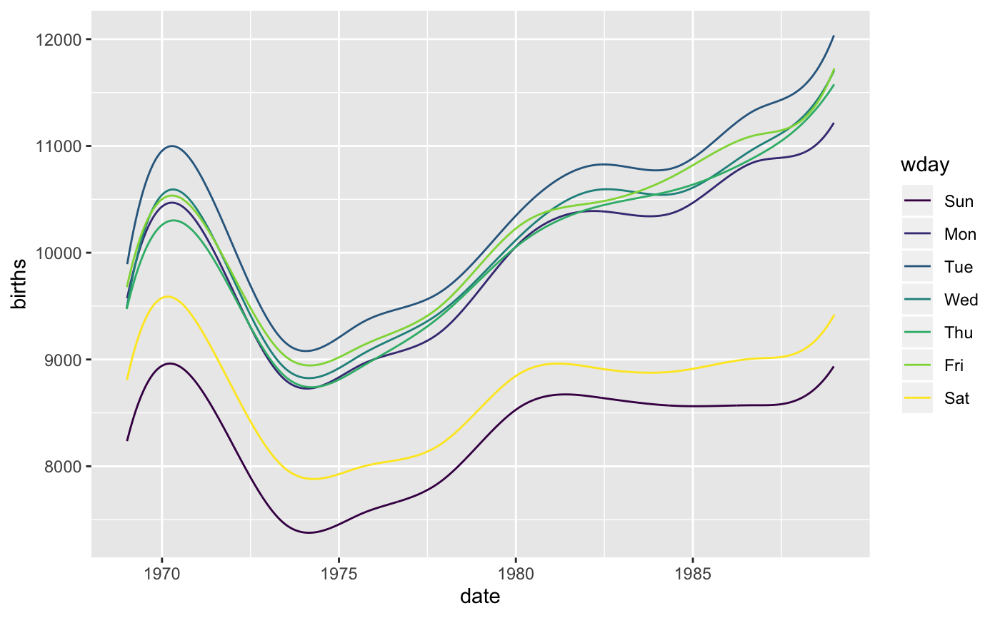

Similar to geom_smooth, this adds spline fits to plots.
stat_spline(mapping = NULL, data = NULL, geom = "line", position = "identity", na.rm = FALSE, show.legend = NA, inherit.aes = TRUE, weight = NULL, df = NULL, spar = NULL, cv = FALSE, all.knots = FALSE, nknots = stats::.nknots.smspl, df.offset = 0, penalty = 1, control.spar = list(), tol = NULL, ...) geom_spline(mapping = NULL, data = NULL, stat = "spline", position = "identity", na.rm = FALSE, show.legend = NA, inherit.aes = TRUE, weight = NULL, df = NULL, spar = NULL, cv = FALSE, all.knots = FALSE, nknots = stats::.nknots.smspl, df.offset = 0, penalty = 1, control.spar = list(), tol = NULL, ...)
| mapping | An aesthetic mapping produced with |
|---|---|
| data | A data frame. |
| geom | A geom. |
| position | A position object. |
| na.rm | A logical indicating whether a warning should be issued when missing values are removed before plotting. |
| show.legend | A logical indicating whether legends should be included
for this layer. If |
| inherit.aes | A logical indicating whether aesthetics should be
inherited. When |
| weight | An optional vector of weights.
See |
| df | desired equivalent degrees of freedom.
See |
| spar | A smoothing parameter, typically in (0,1].
See |
| cv | A logical.
See |
| all.knots | A logical.
See |
| nknots | An integer or function giving the number of knots to use
when |
| df.offset | A numerical value used to increase the degrees of freedom
when using GVC.
See |
| penalty | the coefficient of the penalty for degrees of freedom in the
GVC criterion.
See |
| control.spar | An optional list used to control root finding
when the parameter |
| tol | A tolerance for sameness or uniqueness of the |
| ... | Additional arguments |
| stat | A stat. |
if (require(mosaicData)) { ggplot(Births) + geom_spline(aes(x = date, y = births, colour = wday)) ggplot(Births) + geom_spline(aes(x = date, y = births, colour = wday), nknots = 10) }#>